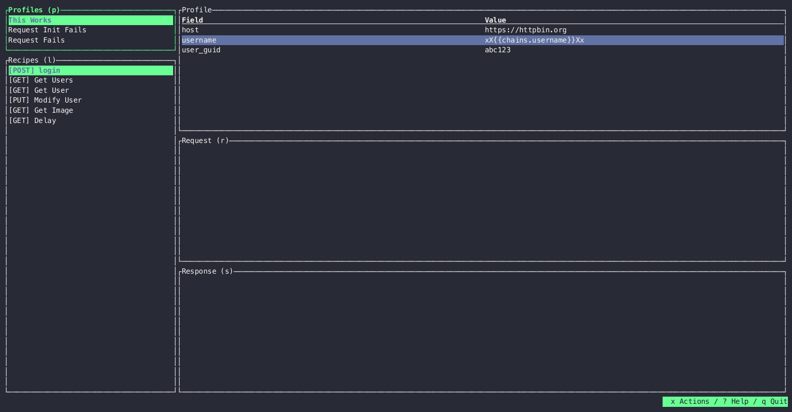

slumber
Install v1.0.0
Published on Apr 25 2024 at 01:35 UTC
Slumber



Slumber is a TUI (terminal user interface) HTTP client. Define, execute, and share configurable HTTP requests. Slumber is built on some basic principles:
- It will remain free to use forever
- You own your data: all configuration and data is stored locally and can be checked into version control
- It will never be enshittified
Features
- Usable as a TUI or CLI
- Source-first configuration, for easy persistence and sharing
- Import from external formats (e.g. Insomnia)
- Build requests dynamically from other requests, files, and shell commands
- Browse response data using JSONPath selectors
- Switch between different environments easily using profiles
- And more!
Examples
Slumber is based around collections. A collection is a group of request recipes, which are templates for the requests you want to run. A simple collection could be:
# slumber.yml requests: get: !request method: GET url: https://httpbin.org/get
Create this file, then run the TUI with slumber.
For a more extensive example, see the docs.